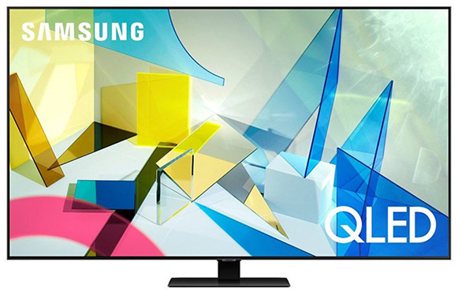

Vďaka pokrokovým technológiám dokáže Samsung TV zobraziť štvornásobné
množstvo pixelov, lepšie pracuje s jasom a disponuje takmer nekonečnou
paletou farebných odtieňov. Výsledkom je ostrý, jasný a realistický
obraz plný detailov. Na displeji môžete zdieľať obrazovku vášho počítača
a pracovať na väčšej ploche. Svoje využitie si veľká obrazovka nájde aj
pri hraní hier, pri ktorom vďaka hernému režimu budete mať akčné scény
pod kontrolou. Nechýba inteligentný asistent Bixby, ktorý reaguje na
hlasové povely, alebo funkcia AirPlay 2.
Špecifikácie:
Obraz:
Výrobca: Samsung
Druh televízorov: LED
Uhlopriečka v palcoch: 55 palcov
Formát obrazovky: 16 : 9
Rozlíšenie: 3840 x 2160
Podpora HDR: áno
Vstupy / výstupy:
USB port: áno
Počet HDMI vstupov: 2
Vstup pre satelitnú parabolu: áno
Slúchadlový výstup: nie
Počet USB vstupov: 1
Cena: 449,00 €
Philips 58PUS7505
Popis:
Zážitok ako v kine? Vďaka LED televízoru Philips bude dokonalý aj doma v obývačke.
A to nielen vďaka vynikajúcemu obrazu, ale aj zásluhou mimoriadne kvalitného zvuku, ktorý tento model
ponúka.
Televízor poteší aj rýchlym a intuitívnym operačným systémom,
ktorý prináša množstvo výhod.
Špecifikácie:
Obraz:
Výrobca: Philips
Druh televízorov: LED
Uhlopriečka v palcoch: 58 palcov
Formát obrazovky: 16 : 9
Rozlíšenie: 3840 x 2160
Podpora HDR: áno
Vstupy / výstupy:
USB port: áno
Počet HDMI vstupov: 2
Vstup pre satelitnú parabolu: áno
Slúchadlový výstup: nie
Počet USB vstupov: 1
Cena: 365,59 €
LG OLED55CX
Popis:
Televízor OLED s rozlíšením 4K vás určite kvalitou obrazu nesklame. Viac než 100 miliónov pixelov sa
jednotlivo rozsvieti a zhasína podľa potreby a spolu s režimom Filmmaker zabezpečuje prirodzený, detailný a
plynulý obraz. Filmy môžete sledovať celý víkend, režim Eye Comfort znižuje namáhanie zraku. Dokonalú
plynulosť a herný zážitok zaisťuje vyššia snímková frekvencia, adaptívna synchronizácia a nízka latencia. S
funkciou OLED Motion sa pri sledovaní zápasu budete cítiť, ako by ste stáli na štadióne. Funkcia Športové
upozornenia vás informuje o aktuálnych výsledkoch. Al procesor α9 Gen 3 zistí, aký žáner práve sledujete, a
prispôsobí tomu kvalitu obrazu. Určite uvítate aj podporu inteligentných funkcií, ako je Asistent Google,
Amazon Alexa, Apple Air Play 2 a HomeKit.
Špecifikácie:
Obraz:
Výrobca: LG
Druh televízorov: OLED
Uhlopriečka v palcoch: 55 palcov
Formát obrazovky: 16 : 9
Rozlíšenie: 3840 x 2160
Podpora HDR: áno
Vstupy / výstupy:
USB port: áno
Počet HDMI vstupov: 4
Vstup pre satelitnú parabolu: áno
Slúchadlový výstup: áno
Počet USB vstupov: 3
Cena: 949,00 €
Samsung QE55Q80T

Popis:
Pokročilý televízor s inteligentným procesorom od spoločnosti Samsung otvára bránu úchvatnému obrazovému
zážitku. Prístroj je vybavený vysokým 4K rozlíšením, kvalitnou optimalizáciou obrazu či priamym zadným
podsvietením. Nechýba mu technológia Quantum Dot, ktorá sa postará o tú najlepšiu reprodukciu farieb, a ani
optimalizácia jasu podľa okolitého osvetlenia. Pokročilé audio vybavenie poskytuje mimoriadne realistický a
vždy zrozumiteľný zvuk. Inteligentný procesor ponúka mnoho moderných funkcií a nádherný minimalistický
dizajn v kombinácii s Ambiente+ režimom robia z televízora unikátny interiérový doplnok.
Špecifikácie:
Obraz:
Výrobca: Samsung
Druh televízorov: QLED
Uhlopriečka v palcoch: 55 palcov
Formát obrazovky: 16 : 9
Rozlíšenie: 3840 x 2160
Podpora HDR: áno
Vstupy / výstupy:
USB port: áno
Počet HDMI vstupov: 4
Vstup pre satelitnú parabolu: áno
Slúchadlový výstup: áno
Počet USB vstupov: 2
Cena: 779,00 €
Philips 58PUS8505
Popis:
Moderný 4K LED televízor, ktorý vás oslní skvelým obrazom, zvukom a všestrannými funkciami. Vysoké
rozlíšenie, sýte reálne farby a plynulý pohyb doplnený o hlboký priestorový zvuk urobia zo sledovania
obľúbeného seriálu či filmu nevšedný zážitok. Navyše budete do deja vtiahnutí ešte viac a to vďaka
technológii Ambilight, ktorá vytvára dojem väčšieho obrazu. Televízor disponuje operačným systémom Android,
v ktorom môžete sťahovať hry, používať aplikácie alebo vyhľadávať v databáze najnovšie filmy. O tom, že ide
o moderný televízor, vás presvedčí aj možnosť ovládať ho hlasom. A to nielen samotný televízor, ale aj iné
spotrebiče vo vašej domácnosti, ktoré sú kompatibilné s asistentmi Google a Alexa.